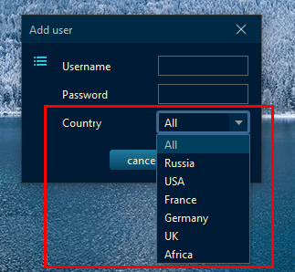

Update history
03.12.2023: Added telegram bot (
bot
)
23.10.2023: Brain shake game (
open source
)
20.09.2023: Checking the RSS source when adding it to the directory
02.08.2023: The ability to create a user with RSS sources of a specific country

 Update history
Update history